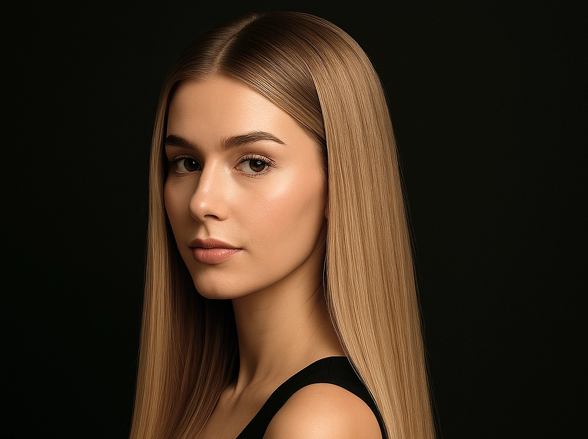

Нарощенные волосы требуют особого ухода, и даже небольшие ошибки могут сократить срок их носки.
В этой статье мы разберем 6 самых распространенных ошибок, которые допускают после
наращивания волос в Ростове-на-Дону, а также расскажем, как сохранить идеальный вид прядей надолго.
Основные ошибки после наращивания
1. Неправильное мытье головы
Ошибка: Использование обычных шампуней с сульфатами, агрессивное трение у корней.
Последствия: Капсулы ослабевают, волосы быстрее путаются.
Как избежать:
- Используйте бессульфатные шампуни
- Мойте голову аккуратно, не трите зону креплений
- Наносите кондиционер только на длину
2. Пренебрежение термозащитой
Ошибка: Укладка утюжком или плойкой без термозащиты.
Последствия: Искусственные пряди пересушиваются, становятся ломкими.
Как избежать:
- Всегда наносите термозащитный спрей перед укладкой
- Используйте низкие температуры (до 160°C)
3. Неправильное расчесывание
Ошибка: Резкие движения, расчесывание от корней.
Последствия: Пряди путаются, капсулы могут оторваться.
Как избежать:
- Используйте щетку с натуральной щетиной
- Начинайте расчесывать с кончиков, постепенно поднимаясь вверх
4. Отказ от коррекции
Ошибка: Затягивание с визитом.
Последствия: Свои волосы отрастают, а нарощенные теряют объем.
Как избежать:
- Делайте коррекцию каждые 2-3 месяца
- В Ростове-на-Дону цены на наращивание волос включают и коррекцию
5. Неправильный сон с нарощенными волосами
Ошибка: Сон с распущенными волосами.
Последствия: Пряди спутываются, капсулы ослабевают.
Как избежать:
- Заплетайте свободную косу или низкий хвост
- Используйте шелковую наволочку
6. Непрофессиональное окрашивание
Ошибка: Самостоятельное мелирование или тонирование.
Последствия: Искусственные пряди могут испортиться.
Как избежать:
- Доверяйте только профессионалам
- В салонах Ростова доступны услуги по наращиванию с тонированием